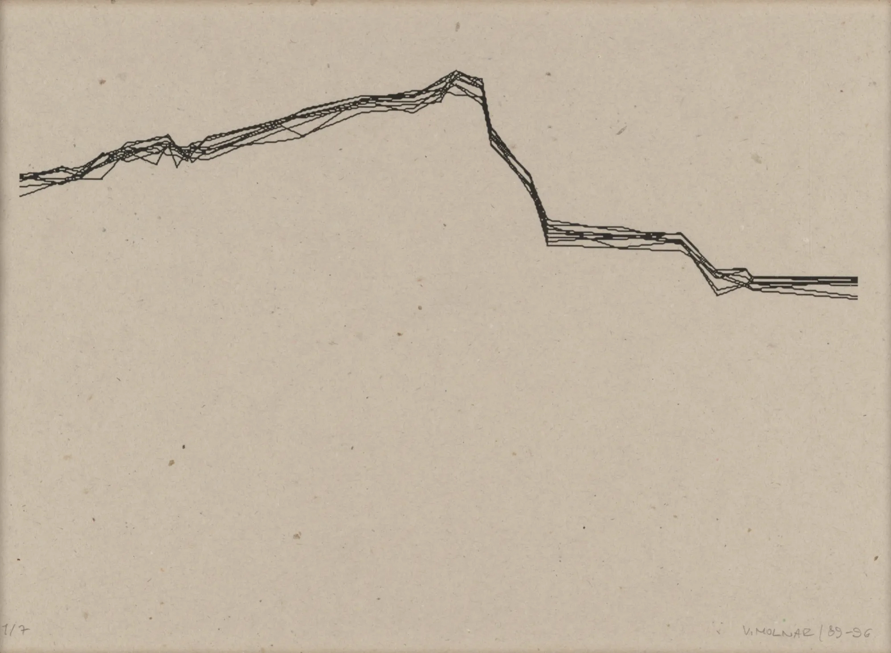
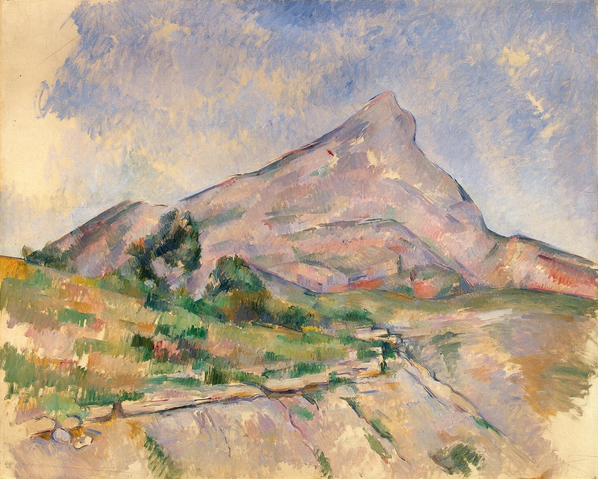

was siehst du ?
»Eine Linie wie ein Lebenslauf.«

Vera Molnar in:
»Solo d’un trait noir
(Solo für eine schwarze Linie)«
6. November 1994 im Zug

1/5 – Vera Molnar, Serie Mont Sainte-Victoire, Laserdruck, Edition 7, 1989-96, Courtesy the artist and DAM.org (Quelle)

2/5 – Vera Molnar, Variations Sainte-Victoire, 1989 - 1996, Editon 7, Serie N° 1, Digitaldruck (Quelle)

3/5 – Vera Molnar, Variations Sainte-Victoire, 1989 - 1996, Editon 7, Serie N° 4, Digitaldruck (Quelle)

4/5 – Vera Molnar, Variations Sainte-Victoire, 1989 - 1996, Editon 7, Serie N° 8, Digitaldruck (Quelle)

5/5 – Vera Molnar, Variations Sainte-Victoire, 1989 - 1996, Editon 7, Serie N° 10, Digitaldruck (Quelle)
Platzhaltertext
»Das erste Mal, dass ich einen Mont Sainte-Victoire von Cézanne sah, war es auf einer Reproduktion in Budapest. Viel später, in den Vereinigten Staaten entdeckte ich in einem Buch die Kurve, die von Gauß, dem berühmten Mathematiker, beschrieben worden war. Ich machte ganz viele Zeichnungen davon, die mir gestohlen wurden. Ich war empört. Ich wollte nichts mehr von Gauß wissen. 10 oder 15 Jahre später war ich eines Morgens in Aix und was sah ich, als ich aus dem Fenster blickte? Die Kurve von Gauß: Es war der Mont Sainte-Victoire.«

Normalverteilungskurve nach Carl Friedrich Gauß (1777-1855)

Paul Cézanne, Montagne Saint-Victoire, 1887/88, Öl auf Leinwand, 81 x 100,5 cm
Der Maler Paul Cézanne (1839-1906), von dem Vera Molnar hier spricht, stammte aus Aix en Provence und malte den Mont Sainte Victoire über viele Jahre hinweg immer wieder. In der Wiederholung des immer gleichen Motivs versucht er der „Logik des Sehens“, die für ihn in der Gleichzeitigkeit von Sinneseindruck, Empfindung und Gedanken begründet liegt, auf die Spur zu kommen. Vera Molnar zitiert Cézanne, der viel über seine Malerei nachgedacht und geschrieben hat und über den sie als Studentin ihre Abschlussarbeit schreibt, gern mit dem Satz „Der Künstler ist kein Dummkopf“. Auch für sie ist das Sehen eine Form des Denkens, das seiner eigenen Logik folgt. Und obwohl die Kurve von Gauß (Carl Friedrich Gauß 1777-1855) und der Mont Sainte-Victoire eigentlich nichts miteinander zu tun haben, sind sie über das Sehen, ihre formale Ähnlichkeit miteinander verknüpft.
Der Mont Sainte-Victoire erscheint Vera Molnar an diesem Morgen wie die Kurve von Gauß, aber mit Einsprengseln von Unordnung. Weil sie keinen Bleistift zur Hand hat, reißt sie ein Stück Papier, um die Form festzuhalten. „Ich habe den Mont Sainte-Victoire auf alle möglichen Arten gemacht, gerissen, geschnitten, mit allen möglichen Sorten von Papier.“ Sie hat ihn auch gezeichnet, gefaltet und gestickt. Besonders interessant ist eine Serie von Computerzeichnungen, die den Bezug zu Gauß nochmal ganz direkt herstellt. Ein Graph in der Mathematik wird durch Koordinaten bestimmt. Dabei ist jedem Punkt auf einer Linie ein bestimmter Wert zugeordnet. Auch die Silhouette des Mont Sainte-Victoire, die Vera Molnar nach ihrem Erlebnis in Aix mit dem Computer umsetzt, wird durch die Koordinaten von 28 einzeln festgelegten Punkten erzeugt, die durch Linien miteinander verbunden sind. Blatt für Blatt variiert sie die Lage der Punkte zunächst nur ganz leicht, dann nach dem Zufallsprinzip immer stärker nach unten. Aus unzähligen sich überlagernden Linien entsteht schließlich eine undurchdringliche schwarze Fläche, eine Anhäufung aus Linien und Punkten, ein Berg, ein Massiv. Für eine Linie gibt es in der Sprache Vera Molnars viele Wörter, wie etwa Zug, Riss oder Spur – eine Spur, die jemand oder etwas hinterlässt, die vielleicht auf etwas hinführt oder hinweist oder einfach nur sie selbst ist. Vera Molnar sagt auf ihre unvergleichlich humorvolle Art, sie könne nicht wissen, was andere Leute sehen, sie sehe den Mont Sainte-Victoire überall. Was siehst Du?
Suche Dir einen Baum oder mehrere Bäume und betrachte genau, wie sie gewachsen sind oder zueinander stehen. Mache ein Foto und bearbeite es.